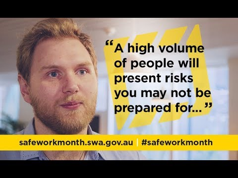
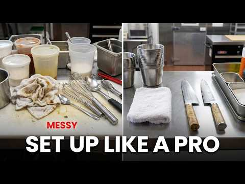
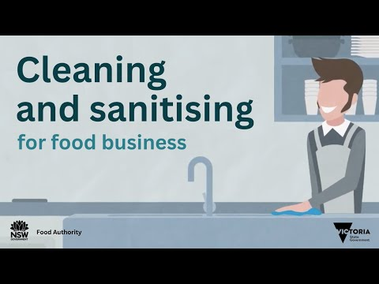
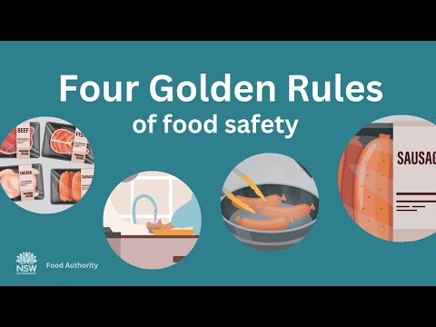
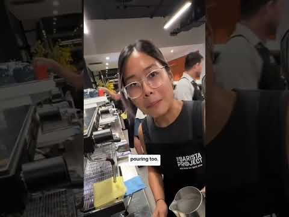

Validated media
Watch with a purpose
Videos appear only where they add observable or procedural learning. No YouTube content is requested until you choose Load video, and every package includes a question and non-video fallback.
Task 1
The unexpected hazards of working in hospitality
Safe Work Australia · validated 20 August 2026
Watch for: List the hazards the café owner links to pace and workflow, then notice how communication and awareness operate as controls.
Follow-up: Which hazard in the video could appear before a kitchen task begins, and what would a learner check or report?
Fallback: Use the safe-kitchen photograph and annotated hazard scene on this lesson. Trace one hazard through possible harm, control and review.
Used in: Kitchen readiness, WHS responsibilities, Hazards and controls

Task 1
How To Sharpen Dull Knives
Tasty · validated 20 August 2026
Watch for: Observe stable setup, blade direction and hand position. This is observation only; the teacher's equipment demonstration and directions control student action.
Follow-up: Name two visible setup choices that reduce loss of control, and one point that still requires the authorised teacher procedure.
Fallback: Use the lesson's annotated knife-safety visual and wait for the teacher's authorised demonstration. Do not attempt maintenance from the fallback.
Used in: Knife safety
Task 1
Mise en Place: set up your station
ChefAuthorized · validated 20 August 2026
Watch for: Notice how placement reduces searching, crossing paths and late decisions before production begins.
Follow-up: Sketch where ingredients, clean tools, waste and finished product would sit in a teacher-nominated station and justify one placement.
Fallback: Use the lesson's mise-en-place workflow visual to organise ingredients, equipment, waste and finished-product zones.
Used in: Mise en place

Task 1
How to wash your hands properly
NSW Food Authority · validated 20 August 2026
Watch for: Track the complete handwashing sequence and identify the surfaces of the hands that must not be missed. Then separate the general public guidance from the local handwashing procedure demonstrated by the teacher.
Follow-up: Which stage prevents contamination being carried forward, and when would a food handler need to wash again before returning to the task?
Fallback: Use the lesson's numbered handwashing and recontamination visual, then rebuild the sequence in the supplied activity. Follow the teacher-authorised facilities and procedure.
Used in: Handwashing and contamination

Task 1
Cleaning and Sanitising for Food Businesses
NSW Food Authority · validated 20 August 2026
Watch for: Distinguish removal of soil from the sanitising stage, and note where the product label, food-contact status and verification affect the sequence.
Follow-up: Why can sanitising not replace cleaning, and which product-specific detail must come from the authorised label or local procedure?
Fallback: Use the lesson's clean-then-sanitise decision sequence and the printable planning sheet. Do not invent a chemical, dilution, contact time or rinse direction.
Used in: Cleaning and sanitising

Task 1
Food safety for retail businesses
NSW Food Authority · validated 20 August 2026
Watch for: Identify the observable food-safety controls that apply from personal hygiene and preparation through storage and service. Match each observation to the specific lesson rather than copying an unrelated procedure.
Follow-up: Name one control visible in the video that applies to this lesson, the harm it reduces, and the local detail that still needs teacher confirmation.
Fallback: Use the lesson's annotated workflow and the NSW Food Authority source note. Apply only the general control relationship; local products, limits and procedures remain teacher-controlled.
Used in: Food-handler health, Produce preparation, Sandwich production, Storage and temperature

Task 1
Four Golden Rules of food safety
NSW Food Authority · validated 20 August 2026
Watch for: Connect each broad food-safety rule to a concrete choice in preparation, service, storage or clean-down, then identify where more specific local directions are still required.
Follow-up: Which broad rule most affects this lesson, what observable action shows it, and what evidence would you record after the task?
Fallback: Use the lesson's annotated design or reflection visual and link one observable decision to its food-safety consequence and next check.

Task 2
Booking a Table
Early Daily Doses of English · validated 20 August 2026
Watch for: Listen for the information requested, how details are confirmed and where a read-back prevents ambiguity.
Follow-up: Which essential booking field was confirmed, and which privacy-safe read-back phrase could you use in the supplied activity?
Fallback: Read the supplied booking dialogue and complete the booking-and-order accuracy activity using who, what, when, special request, contact and confirmation.
Used in: Take bookings and orders with a closed communication loop
Task 3
Careers in Tourism Travel and Hospitality
Career Industry Council of Australia · validated 20 August 2026
Watch for: Record the different entry points, transferable behaviours and ways the speakers say their careers developed.
Follow-up: Choose one role or pathway mentioned and name the source you would use to verify its current training or work requirements.
Fallback: Use the roles-and-pathways visual to compare entry role, transferable skills, next learning and an authoritative source to check.
Used in: Roles, careers and work ethic
Task 4
Basic Barista Skills with Sonia
TAFE NSW · validated 20 August 2026
Watch for: Identify the visible sequence from preparation to product check. Treat any settings as demonstration context, not as this course's authorised values.
Follow-up: Where does the demonstrator check readiness or product quality, and what remains controlled by the local teacher demonstration?
Fallback: Use the annotated beverage-station photograph and espresso workflow visual. Follow only the teacher-authorised machine, recipe and cleaning procedure.
Used in: Espresso foundations: product, equipment and customer language, Espresso workflow: confirm, prepare, extract, texture and serve, Quality: observe, diagnose, act and record
